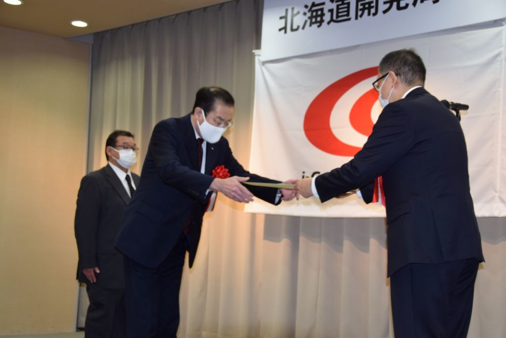
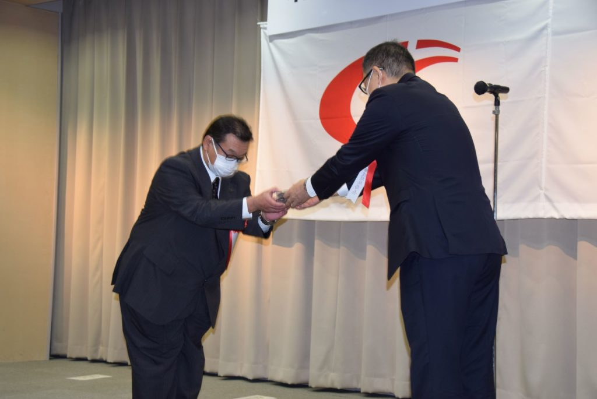

2020.10.09 ニュース
初代【北海道開発局 i-con奨励賞】を受賞しました

令和2年10月9日(金)、札幌第1合同庁舎において、「北海道開発局 i-con奨励賞2020」表彰式が執り行われ、北海道開発局長 倉内公嘉様より表彰状をいただきました。
「北海道開発局i-con奨励賞」は建設現場における生産性向上の優れた取り組みを表彰することにより建設産業に携わる企業のi-construction導入に向けた意欲向上を図るとともに優れた取り組み事例を広く周知することでより一層のi-construction推進を図ることを目的として今年度より新たに創設され、12団体が表彰されました。
弊社では「釧路港新西防波提建設工事」濱谷・山田・真壁経常建設共同企業体が受賞し、山田健一郎社長と工事を担当した土木技術部 風間 勝工事長が表彰されました。

当施工現場は、施工エリアが陸側に近く、潮流も速いため、迅速な作業が求められました。
ケーソンやブロックの据付に使用する作業船舶の位置決めには「GNSSによる作業船位置誘導管理システム」と「自動追尾無線型トータルステーション」を使用し、据付精度の向上に繋がり作業人員の削減が可能になりました。
また、捨石マウンド本均しについて「自動追尾システム管理による基礎捨石機械均し」を採用し、安全性の向上と工期短縮に繋げることができたことなど、ICT技術の活用が評価されました。
栄誉ある賞を頂きましたことに深く感謝を申し上げ、今後もICT技術を有効に活用し、生産性の向上や安全性の確保を図るとともに建設業の魅力向上、担い手確保に努めてまいります。